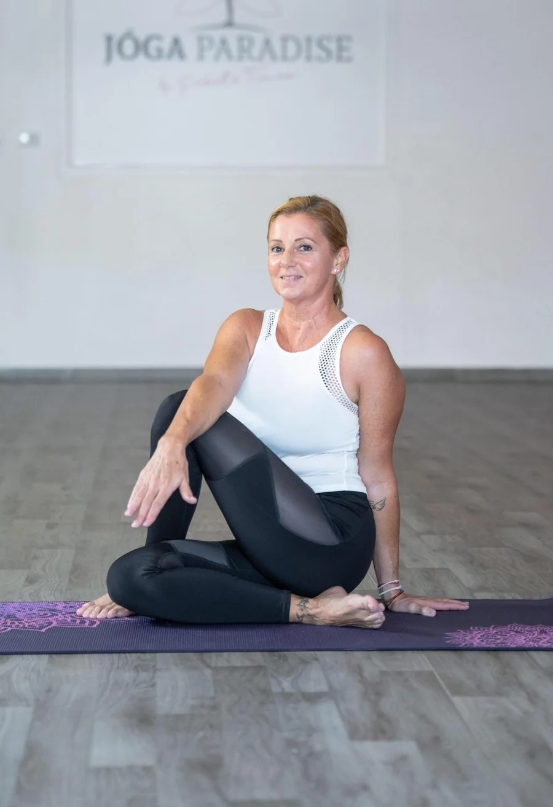
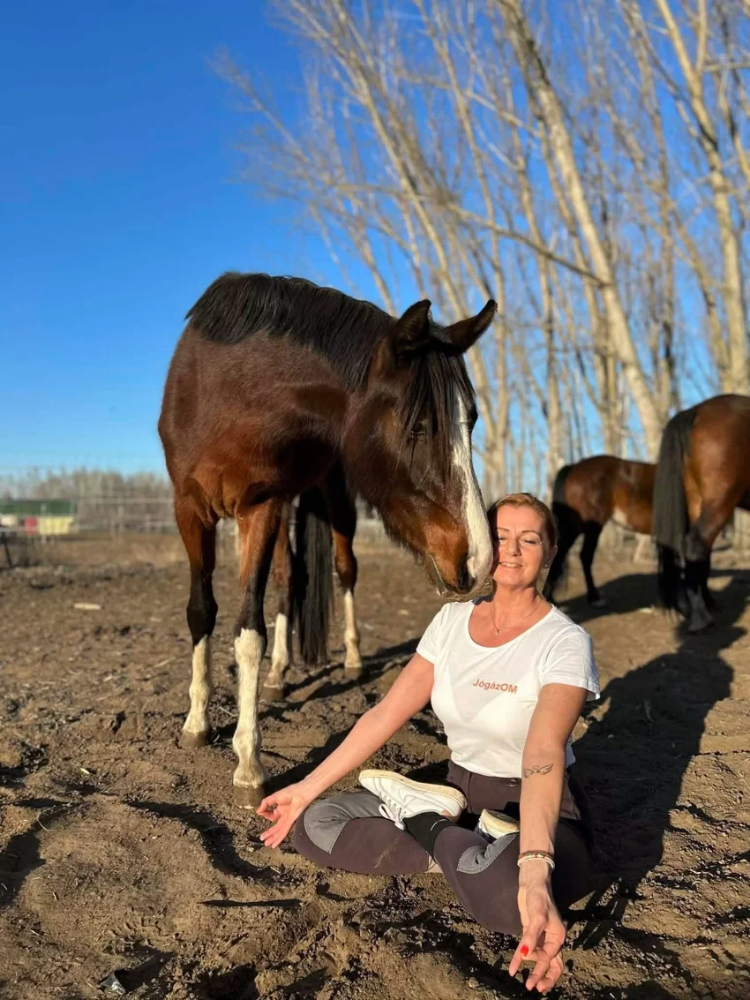
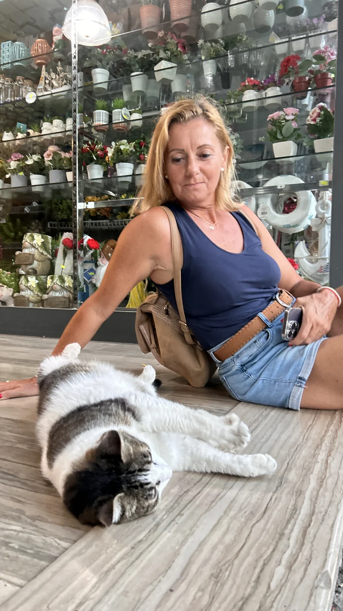

Mozdulj szeretettel.
Figyelj a tested jelzéseire. Adj magadnak teret a mozgáshoz, összehasonlítás és elvárások nélkül.
JÓGA VELEM · KRISZTÁVAL
Együtt a matracon. Közelebb önmagadhoz.
A hétköznapok sűrűjében is lehet egy csendes hely, ahol nem kell megfelelned. Csak megérkezni, lélegezni, és figyelni arra, ami jólesik.
MINDEN KEDDEN · 8:00 · CEGLÉD
MOZGÁS · LÉLEGZET · JELENLÉTA saját tempódban. Figyelemmel, szeretettel.

EGY REGGEL, AMI RÓLAD SZÓL
Adj magadnak egy kis figyelmet, mielőtt igazán beindul a nap. Várlak szeretettel egy közös reggeli gyakorlásra Cegléden.
Jelentkezem a jógaóráraJelentkezés e-mailben: gyarkrisz@gmail.com
Minden kedden
8:00REGGEL · HELYI IDŐ SZERINTÖRÜLÖK, HOGY ITT VAGY
Hiszek a figyelem erejében. Abban, amit magunknak, egymásnak és a körülöttünk élőknek adunk.
A család, a természet és az állatok közelsége fontos része az életemnek. Egy ló csendes bizalma, egy cica dorombolása vagy egy együtt töltött pillanat mind arra emlékeztet: a kapcsolódáshoz néha elég egyszerűen jelen lenni.
Ezt a szemléletet szeretném megosztani a Jóga Velem világában is. Teret adni a mozgásnak, a lélegzetnek, és annak, hogy egy kicsit jobban odafigyelj magadra.
Szeretettel, KrisztaJÓGA VELEM
Nem a tökéletes póz a cél, hanem az a pillanat, amikor jólesik a saját testedben lenni. A Jóga Velem három egyszerű gondolat köré épül.
Figyelj a tested jelzéseire. Adj magadnak teret a mozgáshoz, összehasonlítás és elvárások nélkül.
Egy tudatos lélegzet apró szünet a napodban. Egy lehetőség, hogy megállj, és észrevedd a jelen pillanatot.
A gyakorlás végén maradjon idő a csendre is. Hogy ne csak mozdulj, hanem meg is élhesd azt, ami benned történik.
Egy matracnyi tér. Egy mély lélegzet. Egy új kezdet.
AMIBEN HISZEK
A tested az otthonod.
A figyelmed az ajándékod.
A JÓGA VELEM GONDOLATA
Müller Péter test és lélek kapcsolatáról szóló gondolatai is közel állnak hozzám. A mindennapokban én is ezt az összhangot keresem.
A MATRACON INNEN ÉS TÚL
Természet. Mozgás. Szeretet.
Apró pillanatok, amelyekben ott az egész.

A lovak közelében könnyebb lelassulni. Megállni, figyelni, és egyszerűen csak jelen lenni.

A gondoskodás a mindennapok része. Egy csendes társ, egy apró gesztus, egy kis közös idő.
MIELŐTT TALÁLKOZUNK
Ha valami még eszedbe jut,
írj bátran. Szívesen válaszolok.
Minden kedden reggel 8:00-kor találkozunk. A helyszín: 2700 Cegléd, Batthyány utca 15/a. Jelentkezni a gyarkrisz@gmail.com címen lehet.
Persze! Írd meg, hogy először jógáznál, és mesélj kicsit arról, mit keresel a gyakorlásban. Így az óra előtt személyesen tudunk egyeztetni.
A „Jelentkezem a jógaórára” gomb megnyitja a leveleződet. Küldj egy rövid üzenetet, és e-mailben egyeztetünk a részletekről. Az oldalon nincs külön regisztráció.
TALÁLKOZZUNK A MATRACON
Minden kedden reggel 8:00-kor.
2700 Cegléd, Batthyány utca 15/a.
Jelentkezz e-mailben, és találkozzunk a matracon!